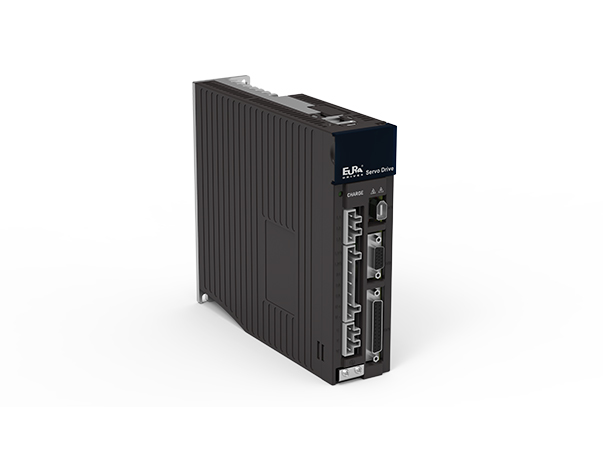

名称：欧瑞伺服驱动器
运行时报警原因及报警内容
| 报警代码（运行时） | 报警名称 | 报警内容 | 处理方案 |
| AL-01 | 过流 | 输出短路或只能模块故障 | 1.修改线路2.修理或更换伺服驱动器 |
| AL-02 | 过压 | 主电路直流侧电压过高 | 1.电压过高，检查输入额定电压 2.负载转动惯量过大，延长减速时间，减小负载 |
| AL-03 | 欠压 | 主电路直流侧电压过低 | 输入电压过低，检查电源电压及是否上电 |
| AL-04 | 硬件错误 | 伺服驱动器硬件故障 | 伺服驱动器内部硬件故障，联系伺服驱动器厂家 |
| AL-05 | 电角度识别错误 | 电机线序错误 | 线序错误，调整线序 |
| AL-06 | 电机过载 | 连续长时间输出大电流 | 1.机械因素，检查机械传动 2.负载太重，减小负载 |
| AL-07 | 超速 | 速度过大 | 速度超过最高转速，检查接线及机械问题 |
| AL-08 | 无 | 无 | 无 |
| AL-09 | 位置环跟踪误差过大 | 位置环跟踪误差故过大 | 1.驱动器增益较低，提高增益，参加速度和位置增益调整 2位置过高脉冲指令频率，降低脉冲指令频率 |
| AL-10 | 编码器故障 | 伺服电机编码器严重错误 | 检查编码器接线，重新上电 |
| AL-11 | 紧急停止 | 外部紧急停止端子有效 | 检查接线或修改端子逻辑设定 |
| AL-12 | 驱动器过热 | 驱动器散热片温度过高 | 环境温度过高或风扇故障，更换风扇或改善温度环境 |
| AL-13 | 主电路电源缺项 | 三相输入中某相电压过低 | 检查电源是否缺相，参数设置是否正确 |
| AL-14 | 能耗制动错误 | 能耗制动参数设置错误 | 检查负载 |
| AL-15 | 无 | 无 | 无 |
| AL-16 | 输入端子设置错误 | 输入端子重复定义 | 需要重新设置 |
| AL-17 | 编码器断线 | 编码器断线 | 编码器线断 |
| AL-18 | 转动惯量识别错误 | 转动惯量识别错误时报警 | 手动调高Po013 |
| AL-19 | 编码器电池告警 | 编码器电池告警 | 检查接线及电压，电池是否安装正确 |
| AL-20 | 伺服电机未初始化 | 伺服电机E-ROM未初始化 | 手动进行电机角度学习 |
| AL-21 | 零漂过大 | 零漂超出设定值 | 检查接线及参数设置 |
| AL-22 | 无 | 无 | 无 |
| AL-23 | 转矩失调保护 | 输出转矩与给定转矩偏差较大 | 检查动力线及编码器线缆 |
| AL-24 | 编码器电池报警 | 编码器电池报警 | 电池欠压，更换电池 |
| AL-25 | 电机过热 | 电机过热 | 改善通风 |
| AL-26 | 电机温度检测断线 | 电机温度检测断线 | 查找线缆问题 |
| AL-27 | 超程保护 | 超程保护 | 超出行程保护正反转的设置范围 |
| AL-28 | E-ROM错误 | E-ROM错误 | 联系伺服驱动器厂家 |
| AL-29 | 漏电保护 | 漏电保护 | 检查漏电保护 |
| AL-30 | 堵转保护 | 伺服电机出现堵转 | 检查机械结构及负载情况 |
| AL-31 | 全闭环混合误差 | 全闭环混合误差 | 全闭环混合误差 |
| AL-32 | 龙门同步错误 | 龙门同步错误 | 1.检查Po383，Po384，Po386参数是否正确 2.检查驱动器的脉冲接线 |
| AL-33 | 电子凸轮错误 | 电子凸轮错误 | 检查凸轮数据 |
| AL-34 | PLC指令错误 | PLC指令错误 | 检查PLC指令 |
| AL-35 | 找原点超时错误 | 找原点超时错误 | 对伺服驱动器进行排查 |
| AL-36 | 参数拷贝错误 | 参数拷贝错误 | 检查接线及参数设置 |